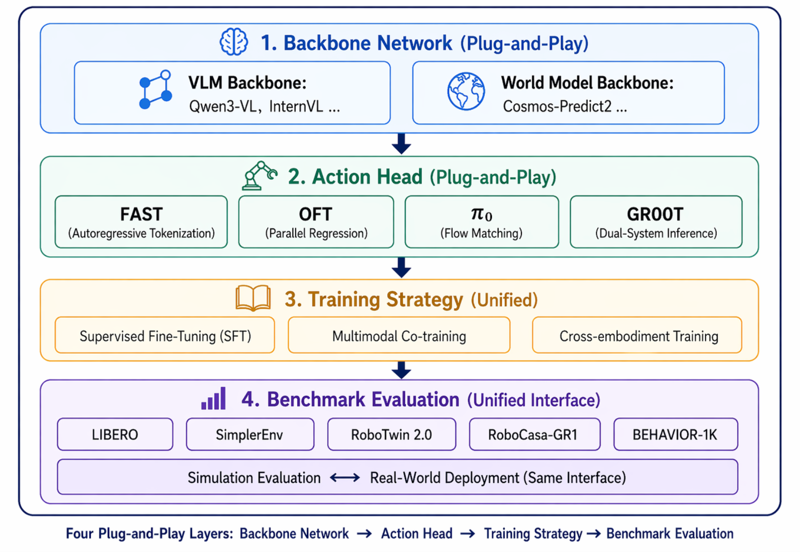
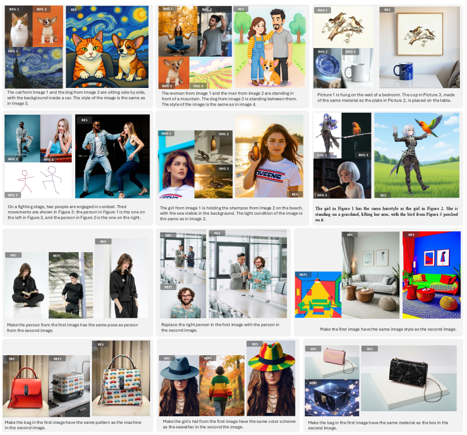
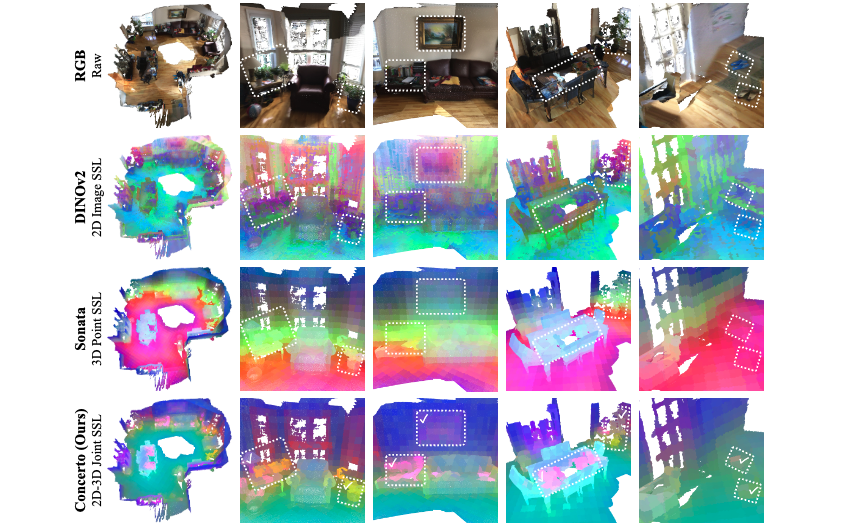
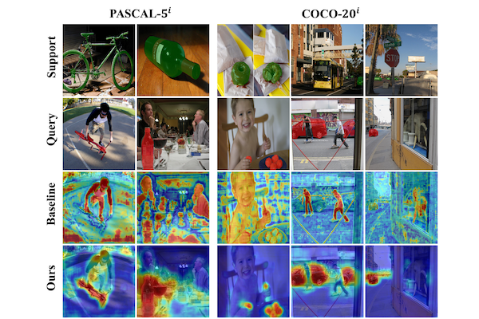
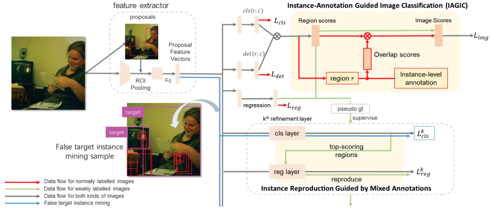

Chengyao Wang 王程钥
I am a Research Scientist at Tencent Hy, working on Multimodal Learning and Agentic AI. I obtained my PhD from the Chinese University of Hong Kong (CUHK), advised by Prof. Jiaya Jia and Prof. Bei Yu. Prior to that, I received my bachelor's degree in Computer Science from Sun Yat-Sen University.
I am particularly interested in building Multimodal Intelligence that interacts with the physical world and learns continuously from experience. My recent work focuses on multimodal foundation models and embodied AI. Representative work includes LLaMA-VID, Mini-Gemini, MGM-Omni and VLAct.
Always happy to chat about research, open source, life, careers, and investing. Feel free to email me and set up a coffee chat.

News
- VLAct was accepted to NeurIPS 2026, Sydney!
- We released VLAct, an open-source VLA pre-training framework with strong generalizability.
- Passed my PhD oral defence, cheers!
- MGM-Omni was accepted to ECCV 2026, Malmo.
- Finally, Mini-Gemini was accepted to TPAMI, cheers!
- We released MGM-Omni, an open-source omni-modal model supporting long speech understanding, generation and zero-shot voice cloning.
- Lyra was accepted to ICCV 2025, Hawaii.
- We released Lyra, an open-source multimodal large language model that supports long speech comprehension, omni understanding and cross-modality efficiency.
- LLaMA-VID was accepted to ECCV 2024, Milano.
- We released Mini-Gemini, an open-source vision-language model that supports high-resolution image understanding and reasoning image generation.
- GroupContrast was accepted to CVPR 2024, Seattle.
- We released LLaMA-VID, an open-source vision-language model that supports hour-long video understanding and reasoning.
Research
* Equal contribution
Multimodal Large Language Models 05


Embodied AI 02


Visual Generation 02


Visual Perception & Representation 04




Selected Awards
- Gold × 3International Collegiate Programming Contest · ICPC Regional
- GoldChinese Collegiate Programming Contest · CCPC
Academic Service
Reviewer / Program Committee Member
- CVPR
- ICCV
- ECCV
- NeurIPS
- ICLR
- AAAI
- WACV